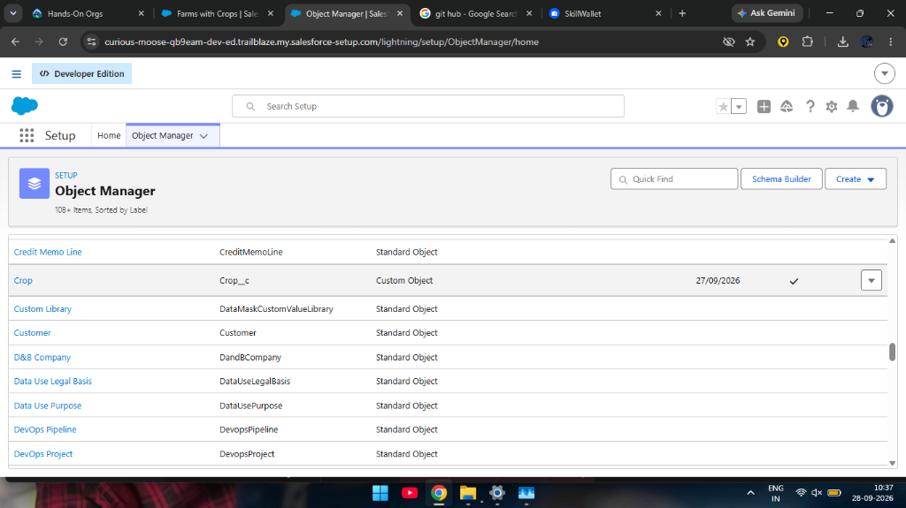
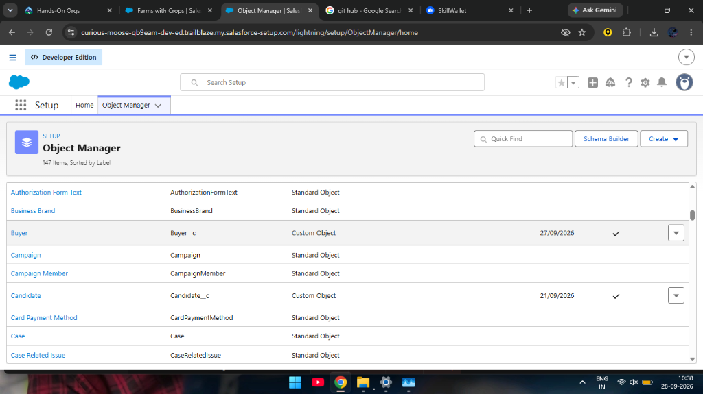
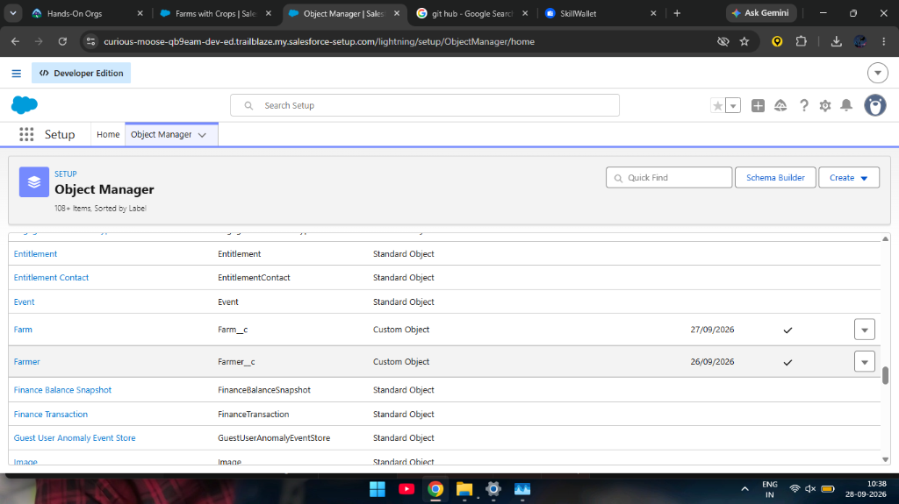
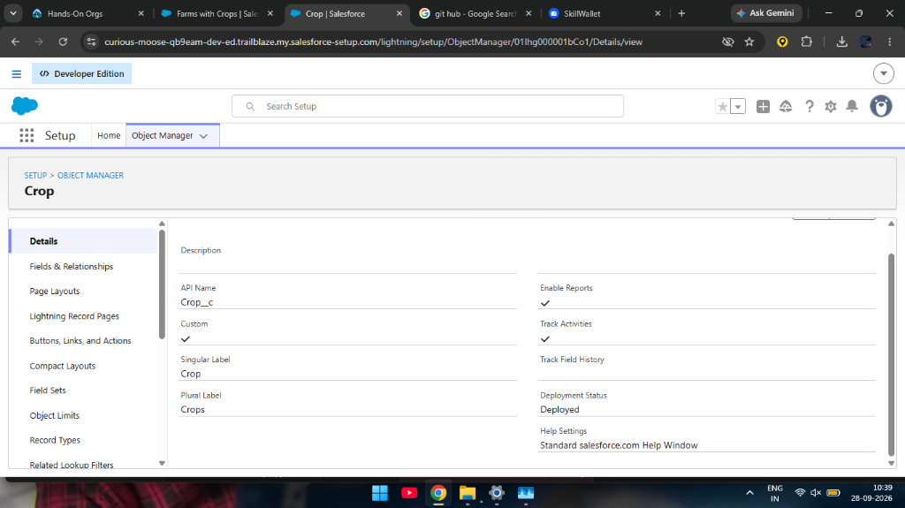
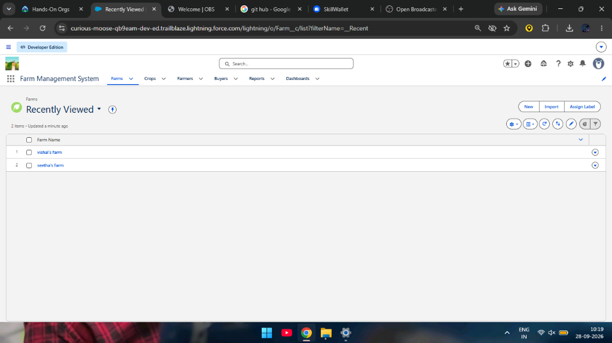
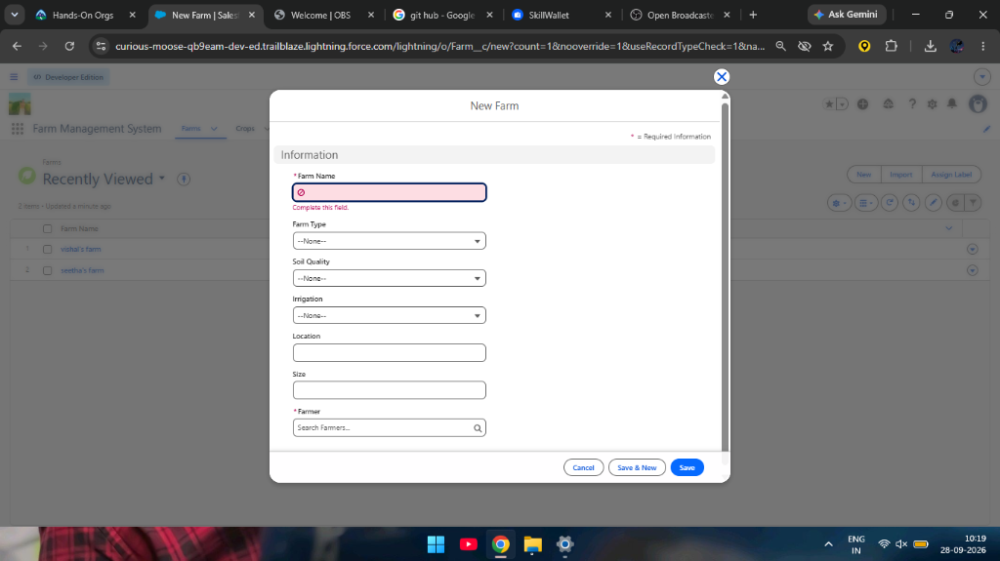
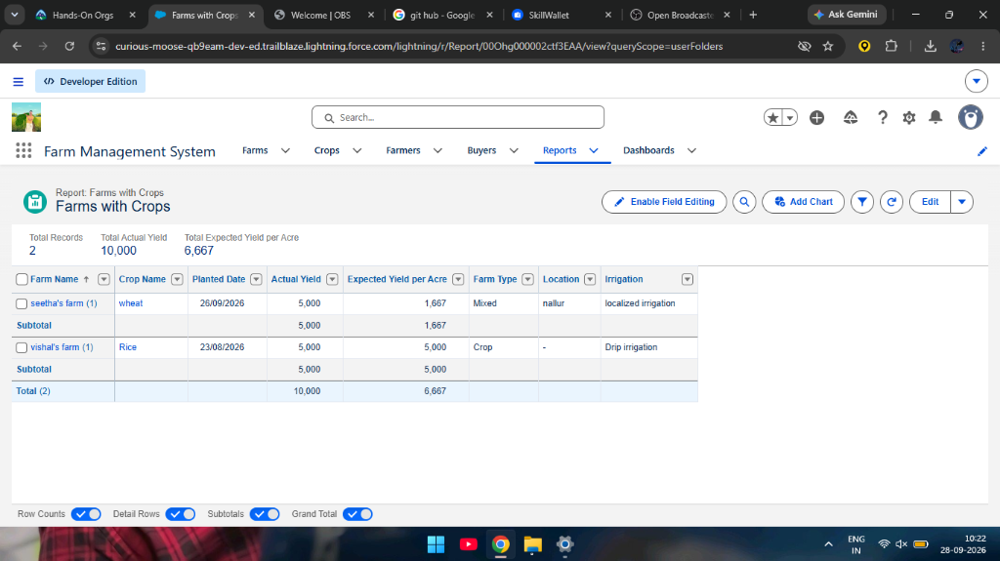
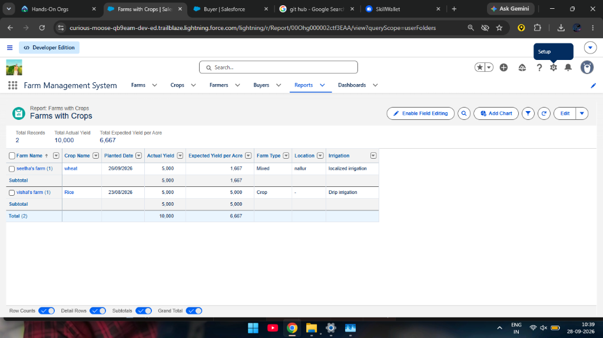
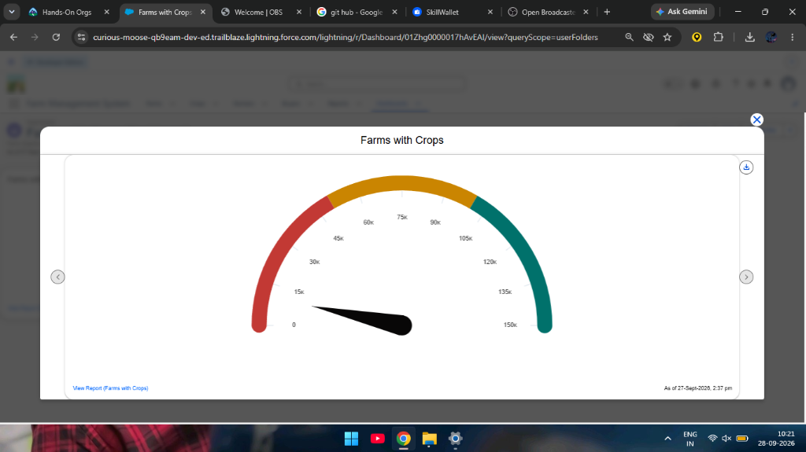

As a farmer, farm manager, or system administrator, I need a single, centralized platform built on Salesforce where I can record and keep track of everything related to my farms — the land details, the crops being grown, the farmers working on those farms, and the buyers purchasing the produce. Right now, most of this information lives in scattered notebooks, Excel files, or just in people's heads, and that leads to mistakes, lost records, and slow decision-making.
What I want is a system that makes it easy to enter and update farm details, log crop production data, and keep buyer transaction records — all through a clean, user-friendly interface that also catches errors before they get saved. On top of that, I want to be able to pull up reports and dashboards in real time so I can actually see how productive each farm is, which crops are performing well, and where improvements are needed. The system should also have proper role-based access so that not everyone can see or edit everything — sensitive data should stay protected, while still allowing everyone on the team to collaborate smoothly.
In short, this system should cut down on paperwork, reduce human errors, speed things up, and ultimately help us make smarter, data-driven decisions about how we manage our agricultural operations.
The Farm Management System (FMS) is a Salesforce-based application that I built as part of my capstone project. The core idea is pretty straightforward — take the messy, manual process of managing agricultural data and turn it into something digital, organized, and actually useful. The application handles data related to farms, crops, farmers, and buyers, and ties everything together with reports and dashboards that provide real-time insights. Instead of flipping through paper registers or juggling multiple spreadsheets, a farmer or manager can just log in, enter or look up information, and get a clear picture of what is happening across their operations.
The main goals behind building this project were to:
Before building anything, I spent time understanding the real problems that different users face when it comes to managing farm-related data. I used a Customer Problem Statement approach to break this down by user type:
| # | Customer | Trying To | But | Because | Feeling |
|---|---|---|---|---|---|
| PS-1 | Farmer | Maintain farm and crop records | Data is often incomplete or incorrect | Records are kept manually in registers | Frustrated and confused |
| PS-2 | Farm Manager | Monitor farm productivity and sales | Reports are delayed and inaccurate | Data is scattered across files and sheets | Stressed and inefficient |
| PS-3 | Buyer | Access crop availability and pricing | Information is not updated regularly | There is no centralized digital system | Uncertain and dissatisfied |
| PS-4 | System Admin | Manage user access and system security | Unauthorized access may occur | Access control is handled manually | Concerned and insecure |
The pattern across all four user types was clear: everyone was dealing with fragmented, unreliable data, and none of them had access to a single source of truth.
To get a deeper understanding of what our target users go through on a daily basis, I put together an empathy map covering farmers, farm managers, buyers, and system administrators.
What they Think & Feel: These users are constantly worried about whether their data is accurate and up to date. Farmers think about whether they have recorded everything properly. Managers feel the pressure of needing timely information to make decisions.
What they Hear: They hear feedback from agricultural officers about the importance of maintaining proper records. Managers hear complaints from higher-ups about delays in reporting.
What they See: Their current reality involves paper registers, cluttered spreadsheets, and hand-written logs. There is no unified system.
What they Say & Do: They manually enter records into registers or Excel. They call each other on the phone to share information. They spend hours compiling reports by hand.
Pain Points: Data loss when registers get damaged, duplicate entries, calculation errors, time wasted on manual compilation, delayed reports, and unauthorized access.
What they Gain from a Solution: Automation of repetitive tasks, faster and more accurate reporting, a single platform for all data, proper access controls, and confidence in data reliability.
During the ideation phase, I considered several possible approaches: manual farm records, Excel-based management, a custom web-based system, a mobile farm app, and a Salesforce-based FMS.
Selected Idea: I went with the Salesforce-based approach. It gave me the most functionality out of the box — custom objects for data modeling, Lightning UI for a clean interface, built-in reports and dashboards, and enterprise-grade security with profiles, roles, and sharing rules.
| FR No. | Requirement |
|---|---|
| FR-1 | User Authentication |
| FR-2 | Farm, Crop, Farmer, and Buyer Management |
| FR-3 | Data Entry and Validation |
| FR-4 | Relationship Mapping between Objects |
| FR-5 | Report Generation |
| FR-6 | Dashboard Visualization |
| FR-7 | User Role Management |
| NFR | Description | Example |
|---|---|---|
| Usability | Easy-to-use interface | Simple Lightning UI navigation |
| Security | Data protection mechanisms | Profiles, Roles, and Sharing Rules |
| Reliability | No data loss | Cloud-based backup and storage |
| Performance | Fast data access | Reports generated in under 3 seconds |
| Availability | 24/7 system access | Cloud hosting on Salesforce platform |
| Scalability | Handles growth | Supports additional farms, users, and regions |
User → Salesforce Lightning UI → Custom Objects (Farm, Crop, Farmer, Buyer) → Validation Rules → Relationships → Reports → Dashboards
| Layer | Technology |
|---|---|
| Frontend | Salesforce Lightning UI |
| Backend | Salesforce Platform |
| Database | Salesforce Cloud (Custom Objects) |
| Automation | Validation Rules, Field Dependencies |
| Analytics | Reports & Dashboards |
The FMS directly addresses the problems identified in the ideation phase. Manual record-keeping is replaced with structured digital data entry in Salesforce. Cloud storage eliminates the risk of data loss. Interactive dashboards replace hand-compiled spreadsheets. Real-time reports remove delays. Role-based access with sharing rules solves the security concerns.
| Parameter | Description |
|---|---|
| Problem | Manual maintenance of farm, crop, farmer, and buyer records leading to errors, data loss, and reporting delays. |
| Solution | A Salesforce-based Farm Management System with centralized data storage, structured relationships, and automation. |
| Innovation | Automated data entry validation, cloud storage, formula fields for yield calculations, and real-time reporting dashboards. |
| Impact | Improved data accuracy, faster reporting, and better decision-making for farmers and managers. |
| Business Model | Digital farm management and agricultural data services platform. |
| Scalability | Supports multiple farms, users, and regions through Salesforce's cloud-based infrastructure. |
| Sprint | Epic | User Story # | User Story / Task | Story Points | Priority |
|---|---|---|---|---|---|
| Sprint-1 | Developer Setup | USN-1 | Create and configure a Salesforce developer account | 3 | High |
| Sprint-2a | Data Modeling | USN-2 | Create Farm, Crop, Farmer, and Buyer objects with relationships | 5 | High |
| Sprint-2b | Data Modeling | USN-3 | Create tabs and a Lightning App for all farm modules | 5 | High |
| Sprint-3a | Automation | USN-4 | Validate farm and crop details (dates, quantities, mandatory fields) | 3 | High |
| Sprint-3b | Automation | USN-5 | Automated flows for crop updates and buyer notifications | 3 | High |
| Sprint-4 | Security | USN-6 | Role-based access control for farmers, managers, and buyers | 5 | High |
| Sprint-5 | Reports | USN-7 | Reports showing crop yield, sales, and buyer transactions | 4 | High |
| Sprint-6 | Dashboards | USN-8 | Dashboards showing crop productivity and operational statistics | 4 | Medium |
| Sprint | Total Story Points | Duration | Start Date | End Date | Completed |
|---|---|---|---|---|---|
| Sprint-1 | 20 | 6 Days | 24 Oct 2022 | 29 Oct 2022 | 20 |
| Sprint-2 | 20 | 6 Days | 31 Oct 2022 | 05 Nov 2022 | 20 |
| Sprint-3 | 20 | 6 Days | 07 Nov 2022 | 12 Nov 2022 | 20 |
| Sprint-4 | 20 | 6 Days | 14 Nov 2022 | 19 Nov 2022 | 20 |
The Farm Management System (FMS) in Salesforce is a complete solution designed to digitize and streamline how agricultural operations are handled. The application brings together data about farms, crops, farmers, and buyers into one unified platform.
What is Salesforce? Salesforce is a cloud-based platform that lets you manage relationships with customers, collaborate with team members, and store data securely — all from anywhere with an internet connection.
What was done: I signed up for a Developer org at developer.salesforce.com, verified my account via email, and set up my password. This org became the environment where the entire Farm Management System was built and configured.
What is an Object? In Salesforce, an object is essentially a database table. It contains fields (columns) and records (rows). Custom objects let you store data specific to your application.
What was built: I created four custom objects:
| # | Object Label | API Name | Purpose |
|---|---|---|---|
| 1 | Farm | Farm__c | Stores farm details like name, type, soil quality, irrigation, location, and size |
| 2 | Crop | Crop__c | Stores crop information including planting dates, yield data, and expected yield calculations |
| 3 | Farmer | Farmer__c | Stores farmer personal and contact details including state, district, and village |
| 4 | Buyer | Buyer__c | Stores buyer information including contact, email, address, and buyer type |
Object Manager — Custom Objects Overview:

Object Manager showing Crop (Crop__c) custom object

Object Manager showing Buyer (Buyer__c) custom object

Object Manager showing Farm (Farm__c) and Farmer (Farmer__c) custom objects
Individual Object Detail Pages:

Crop object details — API: Crop__c, Deployed, Enable Reports checked
Farm object details — API: Farm__c, Deployed, Enable Reports and Track Field History checked
Farmer object details — API: Farmer__c, Deployed
Buyer object details — API: Buyer__c, Deployed, Enable Reports checked
What are Tabs? Tabs in Salesforce serve as navigation elements that give users quick access to the data within each object.
What was built: I created a custom tab for each of the four custom objects — Farm, Crop, Farmer, and Buyer.

Farm Management System app with all custom tabs visible in the navigation bar
What is a Lightning App? A Lightning App in Salesforce is a collection of tabs grouped together to function as a unified application.
What was built: I created a Lightning App called "Farm Management System" using the App Manager. The app includes: Farms, Crops, Farmers, Buyers, Reports, and Dashboards tabs. The System Administrator profile was assigned access.
Farm Management System Lightning App with Farms tab active, showing existing farm records
What are Fields? Fields in Salesforce represent individual data points within an object — similar to columns in a database table.
Actual_Yield__c / Total_Acres_Harvested__c
New Farm record creation form showing all custom fields
What is a Profile? A profile in Salesforce is a collection of settings and permissions that defines what a user can do within the platform.
What was built: Two custom profiles by cloning Standard User:
What are Roles? Roles in Salesforce define the reporting hierarchy and determine which records a user can access based on their position.
What was built: A "Farm Manager" role was added under the CEO role in the hierarchy.
What is a User? A user in Salesforce represents anyone who logs into the system.
What was built: Two users were created:
Note: The Salesforce Developer Edition limits active Salesforce licenses to 2.
What are Sharing Rules? Sharing rules extend data access beyond what Organization-Wide Defaults (OWD) provide.
What was built:
Sample records were created across all four objects to verify that fields, picklists, field dependencies, relationships, and validation rules work correctly in a real usage scenario.
What are Reports? Reports in Salesforce display a list of records that match specific criteria, organized in rows and columns.
What was built: A report called "Farms with Crops" displaying: Farm Name, Crop Name, Planted Date, Actual Yield, Expected Yield per Acre, Farm Type, Location, and Irrigation — grouped by Farm Name with subtotals and grand totals.

Farms with Crops report showing farm and crop data with subtotals

Farms with Crops report — alternate view
What are Dashboards? Dashboards provide a visual summary of data from one or more reports using charts, graphs, gauges, and tables.
What was built: A dashboard called "Farms with Crops" with a Gauge chart component visualizing the aggregated crop yield data.

Farms with Crops dashboard showing a Gauge chart visualization
Looking back at this project, I think the Farm Management System turned out to be a solid demonstration of what Salesforce can do when applied to a real-world domain like agriculture. What started as a fairly straightforward capstone assignment ended up teaching me a lot about how to think through a problem from the user's perspective, design a data model that actually makes sense, and then bring it all together with the tools Salesforce provides.
The system does what it was meant to do — it replaces the fragmented, error-prone manual processes with a clean, centralized digital platform. Farmers can enter their data without worrying about it getting lost. Managers can pull up a dashboard and see exactly how things are going without waiting for someone to compile a spreadsheet. Buyers and sales teams have the information they need, when they need it.
As a capstone project, it covers all the major Salesforce concepts — objects, fields, relationships, profiles, roles, sharing rules, reports, and dashboards — and applies them to a real, practical use case. I feel much more confident about working with Salesforce in a professional setting going forward.
Thank You